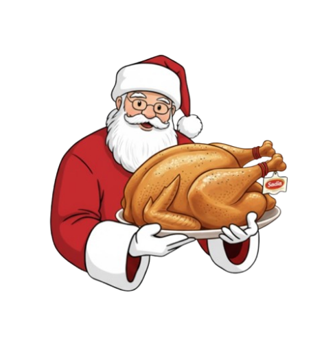
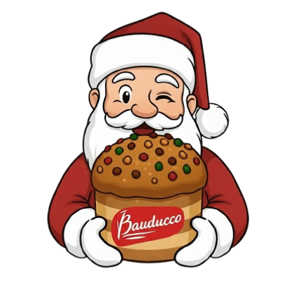
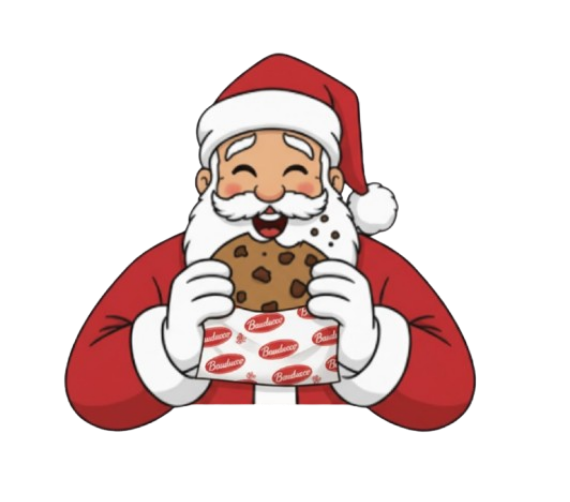
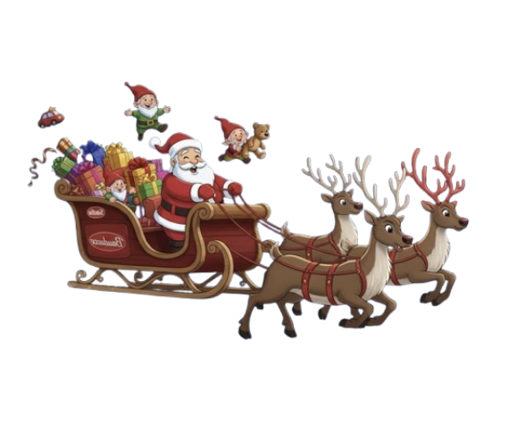

Qual é a data em que comemoramos o Natal no Brasil?
Qual é a comida tradicional que muitas famílias brasileiras comem na ceia de Natal?
Quem costuma entregar os presentes de Natal, segundo a tradição?

Qual destes é um símbolo típico de Natal no Brasil?
O que muitas famílias fazem na noite de Natal?
🎁 Parabéns!
Você concluiu o Quiz de Natal. Agora é só aproveitar o seu Natal especial Sadia x Bauducco.